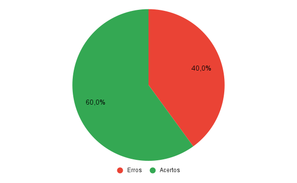

Foward-From
1. Introdução
Para verificar o a análise foward-from do projeto de Requisitos de software do aplicativo Noruh, usaremos a estratégia de "inspeções", seguindo o planejamento detalhado na página de Planejamento da Verificação
2. Preparação
Neste documento, iremos fazer a avaliação da análise foward-from. Para fazer a inspeção vamos utilizar um "checklist" com algumas perguntas com base nas referências utilizadas para a elaboração do artefato e os critérios de avaliação do artefato adotados na disciplina, dessa forma, podemos ver se o nosso está correto com base nessas perguntas. Quando o critério for atentido, terá um "check" confirmando e quando não estiver , terá um "X" dizendo que não está correto. Conforme a legenda abaixo:
- ✅ : Atendido
- ❌ : Não Atendido
Além disso, após identificarmos os erros presentes no artefato, iremos concertá-los, assim produzindo uma segunda versão do artefato e da checklist.
As checklists definidas podem ser encontradas a baixo:
| ID | Questão | Inspeção |
|---|---|---|
| 1 | São apresentados todos os artefatos que foram derivados do requisito? | |
| 2 | É apresentado o status de implementação do requisito? | |
| 3 | É apresentada a história de usuário que representa o requisito? | |
| 4 | Foram colocados hyperlinks para os léxicos? | |
| 5 | Cada requisito apresenta um vídeo demonstrando a funcionalidade implementada no app? |
Fonte: Elaboração Própria
3. Inspeção Foward-From
A checklist após inspeção da análise foward-from pode ser encontrado abaixo:
| ID | Questão | Inspeção |
|---|---|---|
| 1 | São apresentados todos os artefatos que foram derivados do requisito? | ❌ |
| 2 | É apresentado o status de implementação do requisito? | ✅ |
| 3 | É apresentada a história de usuário que representa o requisito? | ✅ |
| 4 | Foram colocados hyperlinks para os léxicos? | ❌ |
| 5 | Cada requisito apresenta um vídeo demonstrando a funcionalidade implementada no app? | ✅ |
Fonte: Elaboração Própria
3.1 Resultados
Após a análise da checklist do backlog do produto verificamos que dos 4 critérios de avaliação nosso backlog cumpriu apenas 2 deles, assim gerando uma taxa de 50% de acertos. Como podemos ver pelo gráfico abaixo:

Fonte: Elaboração Própria
Dessa forma com o objetivo de melhorarmos a qualidade do artefato, geramos uma segunda versão do mesmo cumprindo com os critérios da checklist.
3.2 Inspeção Foward-From Versão 2
A versão 2 da checklist com os critérios de avaliação pode ser encontrado abaixo:
| ID | Questão | Inspeção |
|---|---|---|
| 1 | São apresentados todos os artefatos que foram derivados do requisito? | ✅ |
| 2 | É apresentado o status de implementação do requisito? | ✅ |
| 3 | É apresentada a história de usuário que representa o requisito? | ✅ |
| 4 | Foram colocados hyperlinks para os léxicos? | ✅ |
| 5 | Cada requisito apresenta um vídeo demonstrando a funcionalidade implementada no app? | ✅ |
Fonte: Elaboração Própria
3.3 Resultados
Com esta segunda versão do Foward-From, cumprimos com 100% dos critérios da checklist. Como podemos ver com o gráfico abaixo:

Fonte: Elaboração Própria
Referências
- SERRANO, Maurício; SERRANO, Milene. Requisitos - Aula 23. 1º/2022. Material apresentado para a disciplina de Requisitos de Software no curso de Engenharia de Software da UnB, FGA.
Histórico de versão
| Versão | Alteração | Responsável | Revisor | Data | Hora |
|---|---|---|---|---|---|
| 1.0 | Criação do documento | Lucas | João | 7/09/22 | 15:00 às 16:00 |